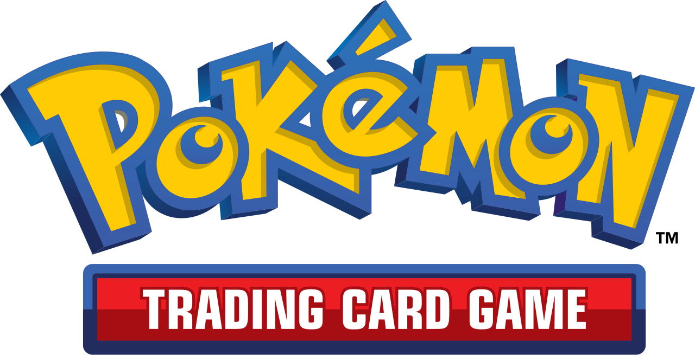

Set the four corners and the lens curve to align the card into an exact rectangle.
Drag the green (outer) and red (inner) border lines to fit the rectified card.
Outer (card edge) Inner (art edge)
Updates instantly as you drag in step ②.